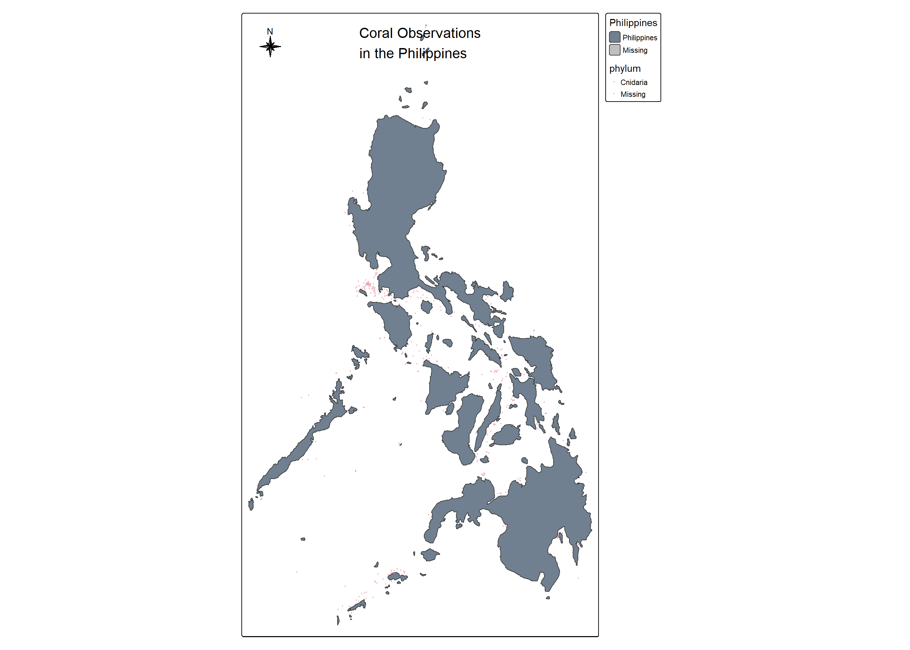
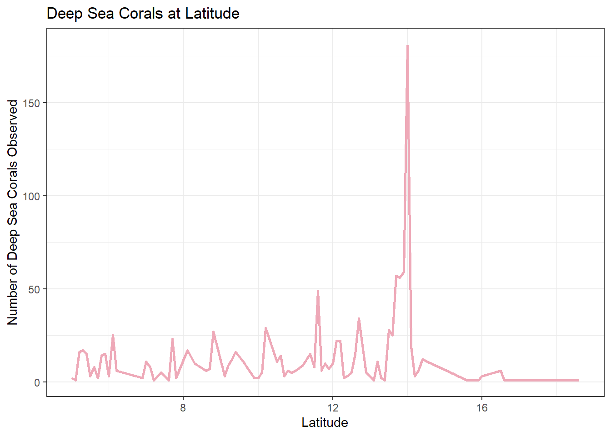
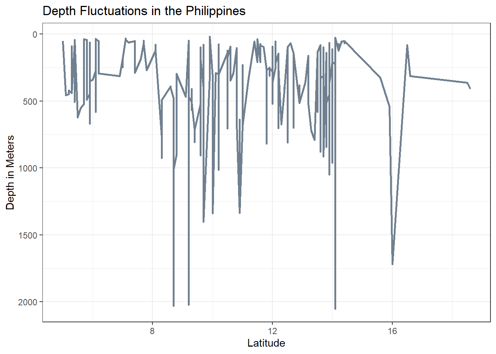
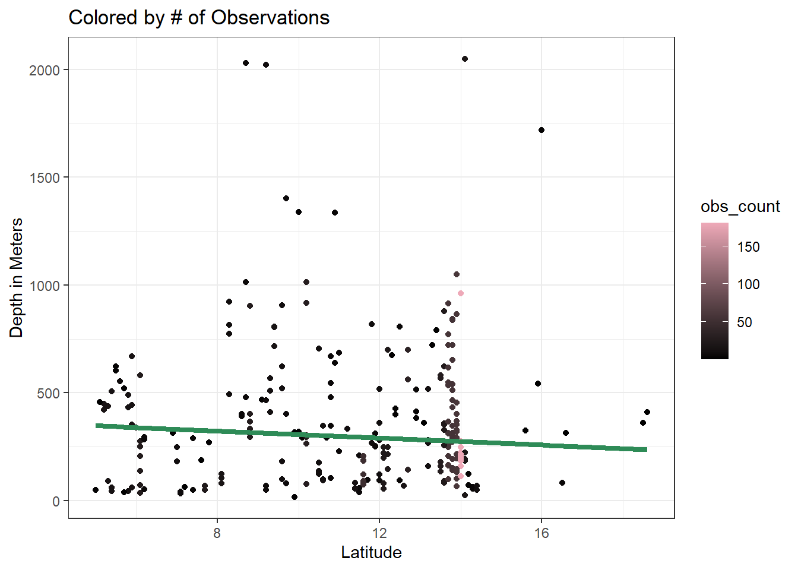
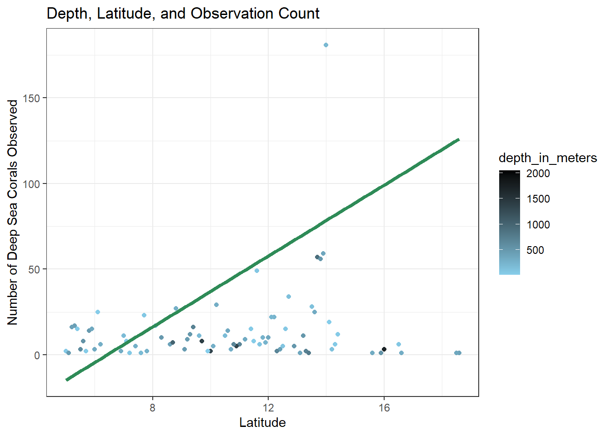
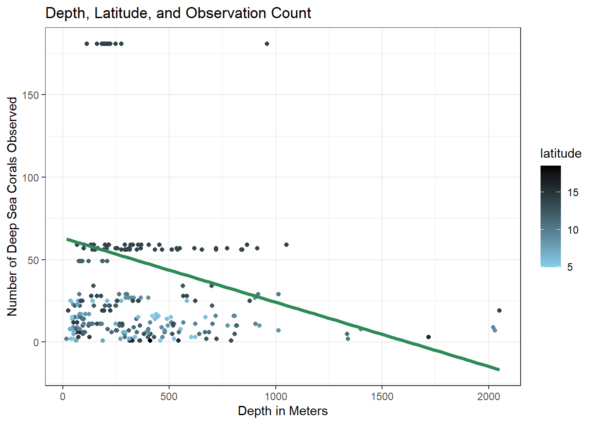

USING AN INTERACTIONS MODEL TO ANALYZE THE RELATIONSHIP BETWEEN DEEP SEA CORALS, LATITUDE, AND OCEAN DEPTH
Analyzing the relationship between deep sea corals, latitude, and ocean depth
EDS
Statistics
Author
BAILEY JØRGENSEN
Published
December 12, 2024
THE CONTEXT:
It is estimated that two-thirds of all known coral species can be classified as “deep-sea corals”. These corals exhibit a diversity similar to those of their shallow-water relatives, but they do not form symbiotic relationships with algae, do not obtain energy from sunlight (instead feeding from microorganisms in the water), and are much more resilient to cold temperatures.
Also similar to their shallow water counterparts, deep sea corals are hosts to many other forms of biodiversity. They are also extremely slow growing, and as a result, slow to recover from ecological or anthropogenic disturbance[2].
This analysis will seek to more deeply understand the environments in which deep sea corals are more likely to appear.
THE DATA:
The data used for this analysis comes from NOAA’s Deep Sea Coral Research and Technology Program (DSCRTP), and is housed at the Smithsonian National Museum of Natural History, Invertebrate Zoology Collection. It contains decades worth of data regarding deep sea corals, their taxa, spatial data, and collecting data. It is an open source data set, that is consistently being updated. (See link in the citations section, to take a look for yourself!)[3]
Here are some details from the metadata of the dataset:
Number of records: 30,850
Number of coral records: 24,768
Number of sponge records: 6,082
Records with images: 245
Seems like we have a lot of data points to work with here. Let’s begin by loading our libraries and reading in the data!
The deep sea corals dataset I chose also includes deep sea sponges. Since this analysis wants to focus on corals, I’ll have to filter that data out. In addition, there are several columns on the dataframe that I know won’t be helpful for my analysis (for example, collector data, institution data, or columns that contains a lot of NAs.) In addition to filtering out the sponge data, I will filter out those unwanted columns as well.
Code
# Filter data to only include columns I wantcorals <- corals %>%clean_names(case ="snake") %>%# Change column names to snake_caseselect(scientific_name, phylum, genus, species, individual_count, latitude, longitude, depth_in_meters, country) %>%# Choose columns I wantfilter(phylum %in%c("Cnidaria")) # Filter to exclude sponges and NA row
I know that in order to properly visualize my data, I’m going to want to make some maps. However, I also want the latitude and longitude data to be easily handled during any linear model calculations, so I decide to make a separate dataset variable, that transforms the lat long data into geometric data that I can easily add to tmaps for visualizations.
Let’s take a look at the result of our well filtered data! This data cleaning will enable us to run effective and easy to understand data analysis in the next few steps.
Code
# Create a table showing the head of our filtered dataframekable(head(corals), format ="html", caption ="Preview of Filtered Global Coral Data") %>%kable_styling(bootstrap_options =c("striped", "hover", "condensed"))
Preview of Filtered Global Coral Data
scientific_name
phylum
genus
species
individual_count
latitude
longitude
depth_in_meters
country
Pourtalosmilia conferta
Cnidaria
Pourtalosmilia
conferta
2
34.95839
-75.32464
146
USA
Pourtalosmilia conferta
Cnidaria
Pourtalosmilia
conferta
6
34.95839
-75.32464
146
USA
Pourtalosmilia conferta
Cnidaria
Pourtalosmilia
conferta
6
29.28357
-88.26665
84
USA
Pourtalosmilia conferta
Cnidaria
Pourtalosmilia
conferta
1
24.48375
-80.88314
191
USA
Desmophyllum pertusum
Cnidaria
Desmophyllum
pertusum
1
30.96684
-79.69976
396
USA
Desmophyllum pertusum
Cnidaria
Desmophyllum
pertusum
1
27.98361
-79.3331
577
Bahamas
THE EXPLORATION:
VISUALIZATION
I want to take a look at the whole scale of my data set. To do this, I decide to make a global map.
From this global map, we can see the huge volume to coral observations present in our dataset. In order to get a little more focus in my model, I decide filter the datset to a specific country, and run my analysis on that.
It could be interesting to, in the future, run the same analysis on each continent, and then cross-compare them. This would reveal interesting insights about different continents and species. Politically, it could also be an interesting view into how collecting bias might affect the results of such an analysis, since we can see that some continents contain more sample points than others. Unfortunately, this could be due to the fact that certain countries and regions are more studied than others, due to data collecting bias in the environmental sector.[1]
For the purpose of this study, however, I will filter the coral data to the Philippines. The Philippines is an area known for its coral diversity and it’s popularity in the diving community. I am curious to see how DEEP SEA corals are represented in the region, rather than the easily dive-able shallow coral systems.
Code
phil_coral <- corals %>%filter(country %in%"Philippines") %>%mutate(latitude =as.numeric(latitude),longitude =as.numeric(longitude),depth_in_meters =as.numeric(depth_in_meters),latitude_rounded =round(latitude, 1) ) %>%add_count(latitude_rounded, name ="obs_count")# Transformed dataset for mappingphil_coral_transformed <- corals_transformed %>%filter(country %in%"Philippines")# Create a table showing the head of our filtered dataframekable(head(phil_coral), format ="html", caption ="Preview of Filtered Philippines Coral Data") %>%kable_styling(bootstrap_options =c("striped", "hover", "condensed"))
Preview of Filtered Philippines Coral Data
scientific_name
phylum
genus
species
individual_count
latitude
longitude
depth_in_meters
country
latitude_rounded
obs_count
Coralliidae
Cnidaria
NA
NA
1
15.9708
119.672
1719
Philippines
16.0
3
Stenohelia tiliata
Cnidaria
Stenohelia
tiliata
1
6.1333
121.317
275
Philippines
6.1
25
Stylaster multiplex
Cnidaria
Stylaster
multiplex
1
5.1867
119.590
450
Philippines
5.2
16
Distichopora irregularis
Cnidaria
Distichopora
irregularis
1
7.0853
125.662
42
Philippines
7.1
8
Distichopora irregularis
Cnidaria
Distichopora
irregularis
4
7.0950
125.662
38
Philippines
7.1
8
Distichopora
Cnidaria
Distichopora
NA
1
7.0867
125.660
37
Philippines
7.1
8
Code
# Get data for base map of Philippinesph <-ne_countries(scale =10, country ="Philippines", returnclass ="sf")# Make a plot of corals in the Philippinestm_shape(ph) +tm_polygons(col ="name",palette =c("slategray", "snow3", "slategray2", "slategray3", "slategray4", "lightslategrey", "lightsteelblue4", "snow4"),title ="Philippines") +tm_shape(phil_coral_transformed) +tm_dots(col ="phylum",palette ="pink2",size =0.1,border.col ="black",title ="Data Point") +tm_compass(type ="8star",size =2,position =c("left", "top")) +tm_layout(main.title ="Coral Observations \nin the Philippines",title.position =c("center", "top"),title.snap.to.legend =FALSE,legend.outside =TRUE)

THE SUMMARIZATION:
As we can see from the map above, there have been deep sea coral collections happening all throughout the country of the Philippines. This gives me a lot of data to run analysis on. I decided to make some additional visualizations to summarize the contents of the data, and guide me toward making a null and alternate hypothesis.
First, I want to take a look at the distribution of coral observations along the different latitudes of the Philippines. In the data cleaning I performed above, I decided to create another column on the Philippines coral dataframe that rounded the latitudes to just two decimal places. This will allow me to work with latitiude data more easily, without having too many latitude points obscuring the visualizations of my data. I also added a column that summed the total number of coral observations at each of these rounded latitudes. This number will allow me to analyze the abundance of corals at each rounded latitude, enabling analysis of coral distributions.
It is using the rounded latitudes column(latitude_rounded), and the the observations per latitude column(obs_count) that I made the following data visualizations.
First up, I wanted to take an initial look at these two columns:
Code
# Make a plot of coral obs and latitudeggplot() +geom_line(data = phil_coral,aes(x = latitude_rounded,y = obs_count),color ="pink2",size =1) +labs(x ="Latitude",y ="Number of Deep Sea Corals Observed",title ="Deep Sea Corals at Latitude") +theme_bw()

This plot shows the general distribution of the corals along the different latitudes, and visualizes a significant spike in abundance around the 14 degrees latitude line.
I wanted a way to visualize depth fluctuations along these latitude lines, in order to help visualize general depth patters in the area of interest. I decided to do another line graph, this one working almost like a cross section of depth along latitude, though of course only including depths available on our dataframe, so not actually having spatial representation, just data representation:
Code
# Make a plotggplot() +geom_line(data = phil_coral,aes(x = latitude_rounded,y = depth_in_meters),color ="slategray",size =1) +labs(x ="Latitude",y ="Depth in Meters",title ="Depth Fluctuations in the Philippines") +scale_y_reverse() +theme_bw()

This visualization showed some interesting spikes in depths collected from, with another large spike around the 14 degree mark, but several other degrees showing some spikes as well. This helps visualize the depths along latitudes that our corals dwell on, but I want to find a better way of visualizing how these depths might effect coral abundance.
I decide to create scatterplots that incorporates all three variables, and see how these different visualizations can help me form my hypothesis.
Code
ggplot() +geom_point(data = phil_coral,aes(x = latitude_rounded,y = depth_in_meters,color = obs_count)) +scale_color_gradient(low ="black", high ="pink2") +labs(x ="Latitude",y ="Depth in Meters",title ="Colored by # of Observations") +geom_smooth(data = phil_coral,aes(x = latitude_rounded, y = depth_in_meters), method ="lm", se =FALSE, linewidth =1.5, color ="seagreen") +theme_bw()

This plot, with a geom_smooth line with method “lm”, or linear model, shows us that as latitude increases, the depths that corals are found in decreases slightly. This visualization makes it difficult to interpret the number of corals observed, however, though it does show how there are more observations made at the 14 degree latitude.
I decide to try rearranging what variables go on what axes:
Code
ggplot() +geom_point(data = phil_coral,aes(x = latitude_rounded,y = obs_count,color = depth_in_meters)) +scale_color_gradient(low ="skyblue", high ="black") +labs(x ="Latitude",y ="Number of Deep Sea Corals Observed",title ="Depth, Latitude, and Observation Count") +geom_smooth(data = phil_coral,aes(x = latitude_rounded, y = obs_count), method ="lm", se =FALSE, linewidth =1.5, color ="seagreen") +theme_bw()

This plot shows me that as latitude increaases, the number of corals observed also increases. There is an outlier high up around latitude 14 degrees, and I suspect that that outlier is increasing the slope of our lm line by quite a bit. This plot makes it easy to observe the number of observations made, compared to the first plot.
Code
ggplot() +geom_point(data = phil_coral,aes(x = depth_in_meters,y = obs_count,color = latitude)) +scale_color_gradient(low ="skyblue", high ="black") +labs(x ="Depth in Meters",y ="Number of Deep Sea Corals Observed",title ="Depth, Latitude, and Observation Count") +geom_smooth(data = phil_coral,aes(x = depth_in_meters, y = obs_count), method ="lm", se =FALSE, linewidth =1.5, color ="seagreen") +theme_bw()

Finally, this plot shows us that as depth increases, the number of deep sea corals observed also decreases, with the colors of the points showing us the distribution of the points along latitude, with more observations occurring at higher latitudes.
All of these plots seem to show that there is some sort of relationship between all of these variables. Let’s see if we can quantify that relationship!
THE HYPOTHESIS:
Null: There is no relationship between number of deep sea corals observed, latitude, and depth in the Philippines.
Alternate: There IS a relationship between number of deep sea corals observed, latitude, and depth in the Philippines.
THE ANALYSIS:
METHOD:
Since I have multiple variables to contend with, I decide on using an INTERACTIONS MODEL to understand the relationship between my variables (corals observed, latitude, and depth). My interactions model will take on this format:
\[
\text{number of deep sea corals observed} \sim \text{latitude} + \text{depth} + \text{latitude} \times \text{depth}
\]
Call:
lm(formula = obs_count ~ latitude_rounded + depth_in_meters +
latitude_rounded:depth_in_meters, data = phil_coral)
Residuals:
Min 1Q Median 3Q Max
-116.30 -36.38 -11.13 18.18 137.55
Coefficients:
Estimate Std. Error t value Pr(>|t|)
(Intercept) -81.583936 9.804587 -8.321 2.6e-16 ***
latitude_rounded 12.426692 0.827484 15.017 < 2e-16 ***
depth_in_meters 0.056945 0.024205 2.353 0.018821 *
latitude_rounded:depth_in_meters -0.007709 0.002110 -3.653 0.000272 ***
---
Signif. codes: 0 '***' 0.001 '**' 0.01 '*' 0.05 '.' 0.1 ' ' 1
Residual standard error: 51.38 on 1082 degrees of freedom
Multiple R-squared: 0.2766, Adjusted R-squared: 0.2746
F-statistic: 137.9 on 3 and 1082 DF, p-value: < 2.2e-16
DIAGNOSTICS AND INTERPRETATION:
Looking at the p values on the far right of the summary chart, I can see that using latitude and depth together is significantly better than using depth alone to predict coral counts.
The p-value of the F-statistic tells me that it is below our threshold of .05, meaning that the relationship between our variables is statistically significant and we can REJECT the null hypothesis. So, there IS a relationship between coral counts, depth, and latitude!
However, our adjusted R squared tells me that that only 27.46% of the variation of coral counts is explained by depth and latitude. Since this isn’t a very high percentage, I am lead to believe that there may be another variable in play that also effects coral counts.
If I were to take this test further, I would explore the possibility of omitted variable bias.
It is also important to consider how collecting practices might be influencing how and where corals are collected. I would also recommend further analysis of these variables, should I choose to continue this DEEP SEA CORALS analysis.
Citations
[1]Konno, K., Gibbons, J., Lewis, R. and Pullin, A.S., 2024. Potential types of bias when estimating causal effects in environmental research and how to interpret them. Environmental Evidence, 13(1), p.1. (https://link.springer.com/article/10.1186/s13750-024-00324-7)
[2]Roberts, S. and Hirshfield, M. (2004), Deep-sea corals: out of sight, but no longer out of mind. Frontiers in Ecology and the Environment, 2: 123-130. https://doi.org/10.1890/1540-9295(2004)002[0123:DCOOSB]2.0.CO;2
[3]Smithsonian Institution, National Museum of Natural History. Observation date range: 1860 to 2022. Coral or sponge occurrence observations submitted to the NOAA National Database for Deep Sea Corals and Sponges (www.deepseacoraldata.noaa.gov). DSCRTP Dataset ID: NMNH_IZ. Database version: 20241022-1.
[4] IMAGE CREDITS: Woods Hole Oceanographic Institution. “Deep-sea Corals.” Know Your Ocean. Accessed December 10, 2024. https://www.whoi.edu/know-your-ocean/ocean-topics/ocean-life/coral/deep-sea-corals/.
GITHUB REPOSITORY:
https://github.com/jorb1/coral-interactions
Citation
BibTeX citation:
@online{jørgensen2024,
author = {JØRGENSEN, BAILEY},
title = {Experimenting with a {DEEP} {SEA} {CORAL} Interactions Model},
date = {2024-12-12},
url = {https://jorb1.github.io/posts/2024-12-12-coral-interactions/},
langid = {en}
}